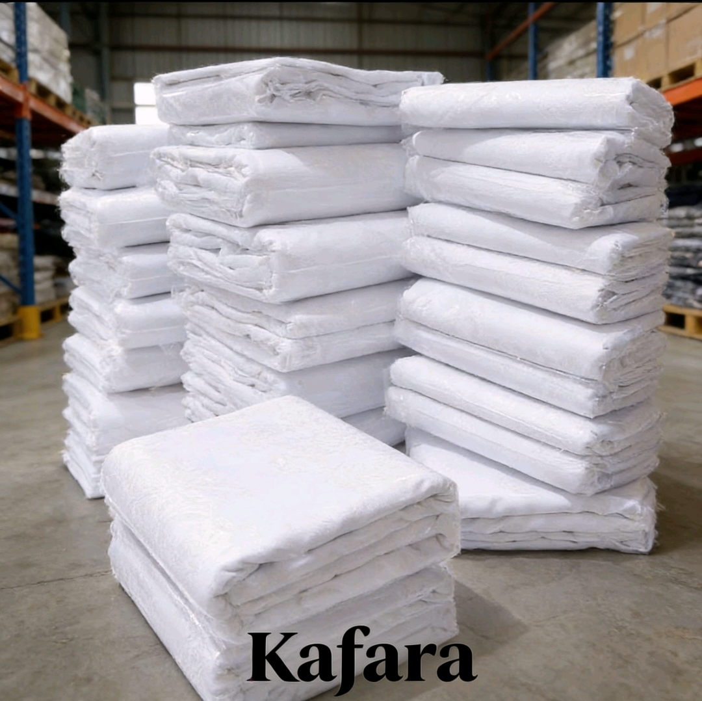

KAFARA
Kain Kafan Lengkap & Perlengkapan Jenazah Siap Pakai
Kafara menyediakan perlengkapan fardhu kifayah yang lengkap, bersih, dan siap digunakan kapan saja.
 👉 Pesan Sekarang
👉 Pesan Sekarang
Kafara menyediakan perlengkapan fardhu kifayah yang lengkap, bersih, dan siap digunakan kapan saja.
👉 Pesan Sekarang




Paket lengkap perlengkapan jenazah sesuai kebutuhan fardhu kifayah.
👉 Beli SekarangPeluang usaha perlengkapan jenazah dengan pasar stabil di masjid dan komunitas muslim.
👉 Gabung ResellerKain kafan adalah kain yang digunakan untuk membungkus jenazah sesuai syariat Islam.
Perlengkapan jenazah termasuk kain kafan, kapas, dan perlengkapan mandi jenazah.
Karena kematian tidak dapat diprediksi sehingga perlu kesiapan.
Pria 3 lapis, wanita 5 lapis sesuai ketentuan syariat.
Kewajiban kolektif umat Islam dalam pengurusan jenazah.
Pilih kain putih, bersih, dan tidak tipis.
Bisnis stabil karena kebutuhan selalu ada.
Cukup daftar via WhatsApp dan mulai jual di wilayah Anda.
Untuk kesiapan jika ada jamaah yang meninggal.
Paket lengkap yang memudahkan proses fardhu kifayah.
👉 Konsultasi Sekarang